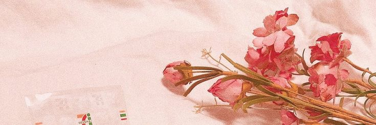
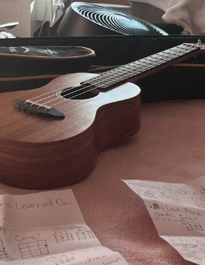
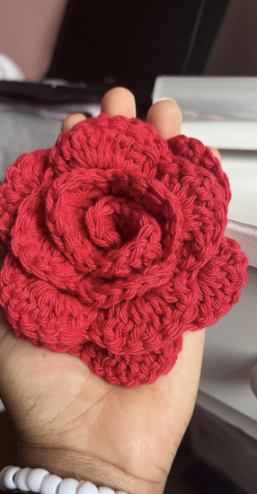
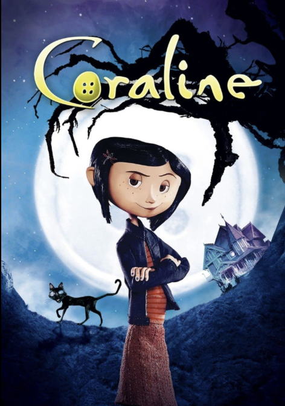
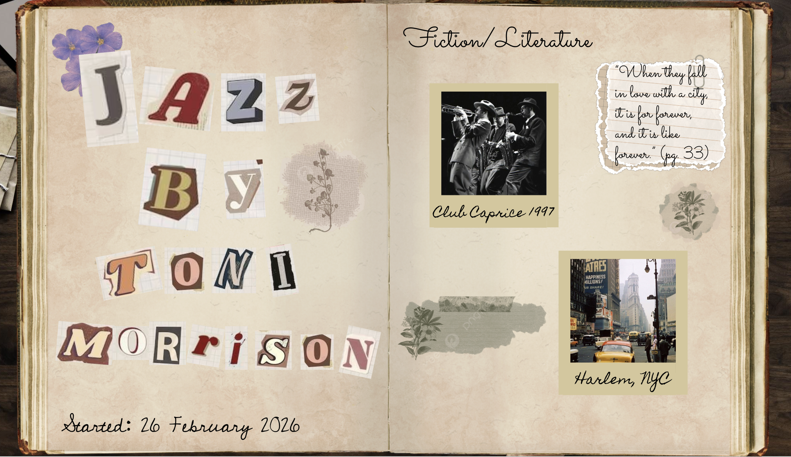

💼 I am a student living in Brooklyn with an interest of becoming either a filmmaker/director, actress, or simply a business owner. My projects consist of making a website about who I am via Google Sites, making my very own adventure game, and a board game. Here is a list of my interests !
🎯 Fun fact ! : I'm possibly the youngest in the room of those born in 2009, and I LOVE strawberry shortcakes !! (got one for my birthday!)
🗒️ There's definitely more that I can say, however, that's up to you to find out >:)




Now, this below here, is the cover page of a journaling project I had for Black History Month.

I didn't think I'd find a book that interested me but once I finally decided to read it, it was quite intriguing. I guess reading can be another thing to add as a hobby/interest.